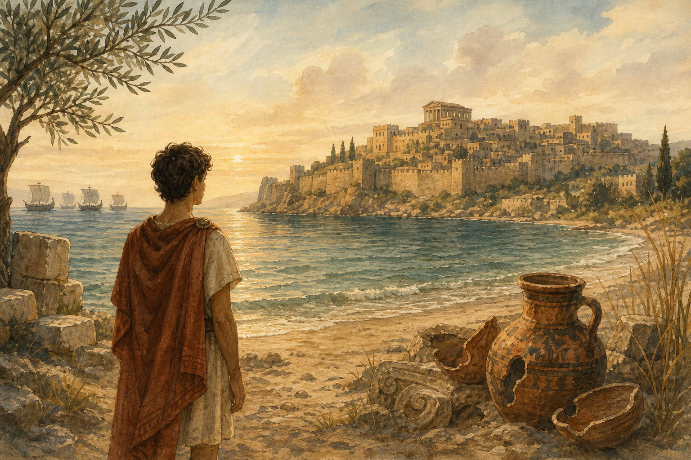
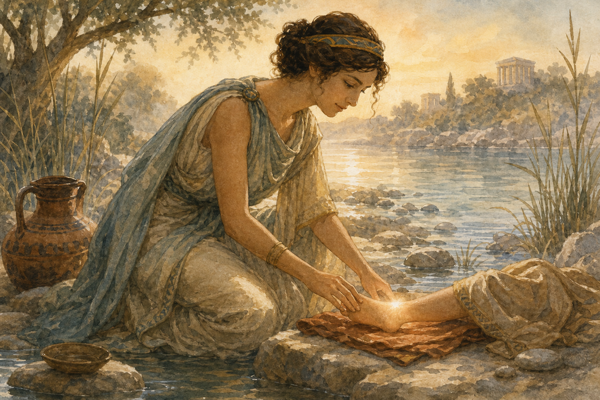
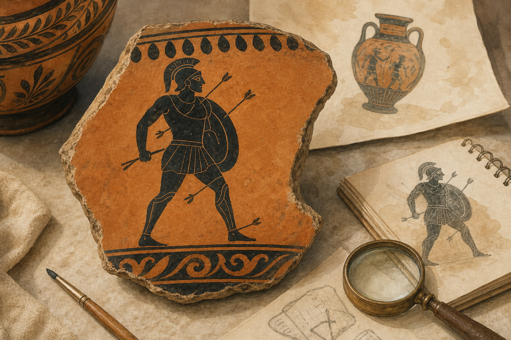

Une courte histoire pour entrer dans le projet par un mythe connu, puis déplacer le regard
vers le corps, les articulations et l'astragale.
Statut : récit pédagogique illustré — les images sont des illustrations contemporaines du site.
Elles ne constituent pas des sources historiques, archéologiques ou anatomiques.

1
Devant Troie
Il y a très longtemps, les poètes racontaient une grande guerre devant la ville de Troie.
Des rois, des guerriers, des bateaux et des dieux entraient dans l'histoire.
Parmi eux, un nom est resté célèbre : Achille. On disait qu'il était rapide, courageux,
presque impossible à arrêter.

2
Une histoire racontée plus tard
Aujourd'hui, beaucoup de personnes connaissent une autre histoire : la mère d'Achille,
Thétis, aurait voulu protéger son enfant en le plongeant dans une eau magique.
Mais cette version n'est pas le cœur des récits grecs les plus anciens. Elle appartient à
une tradition plus tardive, notamment latine. Le mythe a voyagé, changé, grandi.

3
Le fameux talon
On parle souvent du "talon d'Achille" pour désigner le point faible d'une personne très forte.
Certaines images antiques montrent même Achille touché par plusieurs flèches, dont une près
du pied.
Pourtant, il faut apprendre à lire les mots avec attention. En latin, talus peut
renvoyer à la zone de la cheville et à l'astragale, un petit os de l'articulation.
4
Et si ce n'était pas seulement un talon ?
Avec le temps, le mot a glissé vers l'idée moderne du talon. Mais l'histoire nous invite à
regarder plus précisément : près de la cheville se trouve l'astragale.
Ce petit os aide le corps à tenir, à bouger, à trouver son équilibre. Sans lui, pas de pas
solide, pas de course rapide, pas de héros qui s'élance.
Ouverture de séance
Et si le vrai héros de cette histoire était un petit os ?
Les osselets ne sont pas seulement des objets de jeu. L'astragale est un os du corps, un indice
pour les archéologues, un objet que l'on a manipulé, interprété, parfois chargé de sens.
À partir d'Achille, nous allons donc mener une enquête : comment un petit os peut-il nous
parler des animaux, des corps, des mythes, des mots et des sociétés anciennes ?
Statut des images et des sources
Les images de ce petit livre sont des illustrations contemporaines du site. Elles servent à
soutenir l'entrée en récit, mais ne doivent pas être citées comme sources antiques,
archéologiques ou anatomiques.
Sources de travail : voir le dossier de l'activité 3 pour les textes, images et références à valider.
Droits : crédits et autorisations à confirmer avant tout usage hors prototype pédagogique.
Impression : mise en page A4 testée en prototype ; relecture humaine encore nécessaire.